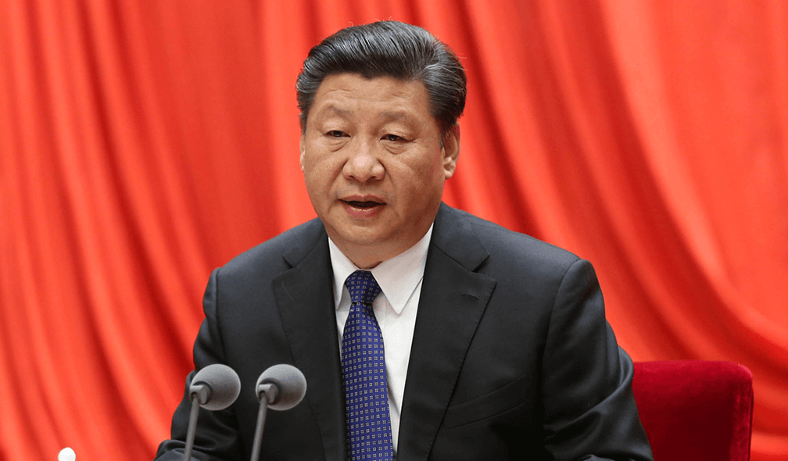

1993年以来，我们党的总书记每年都在中央纪委全会上讲话，表明了党中央对党风廉政建设和反腐败斗争的高度重视和坚定决心。今年我的讲话时间作了调整，我先讲，下午王岐山同志代表中央纪委常委会作工作报告。工作报告经过中央政治局会议、中央政治局常委会会议审议，我完全赞成。下面，我讲4个问题。
我们党肩负着带领全国各族人民实现“两个一百年”奋斗目标、实现中华民族伟大复兴的历史使命，同时也面临着“四大考验”、“四种危险”。完成历史使命，战胜风险挑战，必须管好党、治好党，确保党始终成为中国特色社会主义事业的坚强领导核心。
党的十八大以来，我们党着眼于新的形势任务，把全面从严治党纳入“四个全面”战略布局，把党风廉政建设和反腐败斗争作为全面从严治党的重要内容，正风肃纪，反腐惩恶，着力构建不敢腐、不能腐、不想腐的体制机制。中央纪委贯彻党中央决策部署，遵循党章规定，聚焦中心任务，推动党风廉政建设和反腐败斗争取得新的重大成效。主要表现在以下几个方面。
夺取全面建成小康社会决胜阶段的伟大胜利，关键在党。“打铁还需自身硬”是我们党的庄严承诺，全面从严治党是我们立下的军令状。3年来，我们着力解决管党治党失之于宽、失之于松、失之于软的问题，使不敢腐的震慑作用充分发挥，不能腐、不想腐的效应初步显现，反腐败斗争压倒性态势正在形成。
党中央坚定不移反对腐败的决心没有变，坚决遏制腐败现象蔓延势头的目标没有变。全党同志对党中央在反腐败斗争上的决心要有足够自信，对反腐败斗争取得的成绩要有足够自信，对反腐败斗争带来的正能量要有足够自信，对反腐败斗争的光明前景要有足够自信!